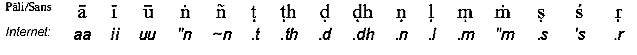

|
BuddhaSasana Home Page |
Vietnamese, with Unicode Times font |
Tủ sách Nghiên cứu Phật học
Tỳ kheo Giác
Nguyên dịch Việt,
Sài gòn, 1989
|
Phần
[04.c] TÂM LỘ TÂM LỘ CẬN TỬ * Tâm lộ cận tử của phàm phu và Thánh hữu học lại được chia ra 4 trường hợp nhỏ:
Chú ý: Trong tâm lộ cận tử ngũ môn và tâm lộ cận tử ý môn đúng ra cũng có trường hợp cũng hữu phần khách, nhưng không cần thiết phải kể ra ở đây. * Tâm lộ cận tử ý môn của bậc La Hán được chia thành hai trường hợp lớn: Tâm viên tịch sanh kế tục một loạt đổng lực dục giới và tâm viên tịch sanh kế tục một loạt đổng lực kiên cố. Trường hợp thứ nhất gọi là tâm lộ viên tịch (parinibbaanaviithi) thông thường, trường hợp thứ hai được gọi là tâm lộ viên tịch đặc biệt. Có tất cả 4 tâm lộ viên tịch thông thường:
Có cả thảy 4 tâm lộ viên tịch đặc biệt :
Minh giải: 1) Có tất cả 36 tâm lộ viên tịch liên thiền: Muốn có được con số 36 đó, trước hết ta phải lấy 2 trường hợp viên tịch sau đây:
Ðem nhân với 9 tố đáo đại thành ra 18, ta lại lấy 18 này nhân với hai hạng độn căn lợi căn thì sẽ có ngay 36 tâm lộ viên tịch liên thiền. 2) Tâm lộ viên tịch liên phản khán có cả thảy 48, và tất cả cũng dựa trên hai cách viên tịch:
Muốn biết Sở-do của con số 48 trên đây; trước hết ta phải hiểu hai cách viên tịch vừa nêu luôn khởi lên trong lúc phản khán chi thiền, do đó:
3) Chỉ có 4 tâm lộ viên tịch liên thông thôi, tức là ta lấy hai hạng độn căn, lợi căn đem nhân với 02 cách viên tịch sau đây:
4) Tâm lộ viên tịch chí mạng đó có tất cả 22, được phân thành 4 trường hợp:
Trong 22 tâm lộ viên tịch chí mạng này, 2 tâm lộ đầu chắc chắn phải khởi lên nơi một vị đắc đạo chí mạng (Jiivitasamasiisiipuggalaa), dĩ nhiên, chỉ một trong hai thôi. Còn 20 tâm lộ sau thì bất định. Vậy tổng kê lại, có tất cả 138 tâm lộ cận tử:
-ooOoo- VẤN ĐÁP Puc: Có bao giờ đổng lực Dục giới và đổng lực kiên cố lại sanh chung trong một tâm lộ hay không? Trường hợp nào? Và trong lúc sanh chung trong một tâm lộ như vậy, cảnh sở tri của 2 thức đổng lực có khác nhau hay không? Hãy giải rõ. Vis: Ðổng lực dục giới và đổng lực kiên cố sanh chung nhau các tâm lộ sau đây: Aadikammikajhaanaviithi, jhaanasamaapattiviithi, paadaka- jhaanaviithi, abhi~n~naaviithi, phalasamaapattiviithi, nirodhasamaapattiviithi. Và trong những lúc sanh chung 1 tâm lộ như vậy, đôi khi cảnh sở tri của hai thứ đổng lực khác nhau, đôi khi cũng giống nhau, hoặc có lúc cảnh sở tri của hai thứ đổng lực vừa khác nhau mà cũng vừa giống nhau dù chỉ trong một tâm lộ. Sau đây sẽ chứng minh từng trường hợp: 1) Tương ngộ nhưng cảnh sở tri bất đồng: Tuy cùng gặp nhau trong một tâm lộ phalasamaapattiviithi nhưng các đổng lực dục giới thì biết cảnh danh sắc hữu vi, còn các đổng lực kiên cố thì lại biết cảnh vô vi pháp. 2) Tương ngộ mà cảnh sở tri cũng tương đồng: Trong các tâm lộ sau đây, đổng lực dục giới và đổng lực kiên cố đều cùng biết một thứ cảnh như nhau, về cả chế định lẫn chân đế: paadakajhaanaviithi, abhi~n~naaviithi, nirodhasamaapattiviithi. 3) Tương ngộ mà cảnh sở tri vừa bất đồng cũng vừa tương đồng: Trong tâm lộ đắc đạo (Maggaviithi) các tâm: chuẩn bị, cận hành, thuận thứ thì biết cảnh hửu vi pháp; còn chuyển tộc, dũ tịnh, tâm đạo, tâm quả thì biết cảnh vô vi pháp. Chú ý: Tâm tam quả, tứ quả mà xuất hiện sau khi vừa xả thiền diệt tuy có cảnh sở tri khác với các tâm bất thiện, thiện hiệp thế, đổng lực tố nhưng điều đó không có can hệ gì bởi lúc ấy là thời điểm mới vừa xuất khỏi thiền diệt. Puc: Các ngài A Xà Lê uyên thâm về tâm pháp bảo rằng: "Theo qui luật, tâm khách quan (vii thicitta) phải nhờ khai ý môn tiến dẫn cảnh sở-tri đến, chúng mới có thể sanh lên để tri nhận bằng không thì chẳng sanh lên được". Ðiều nầy có đúng với mọi trường hợp hay không? Hãy giải thích. Ðồng thời, hãy dịch nghĩa câu kệ sau đây:
Vis: Câu nói trên của chư vị A Xà Lê không phải đem áp dụng vào chỗ nào cũng được, nó chỉ đúng trong trường hợp các lộ ngũ môn và kaamavajanamanodvaaraviithi (lộ ý đổng lực dục giới) mà không có hữu phần khách. Khi nói như vậy, các ngài muốn ám chỉ hai trường hợp đó thôi. Bởi vì đối với các tâm lộ ngũ môn, và tâm lộ ý môn đổng lực dục giới có hữu phần khách tâm khách quan tự động khởi lên mà chẳng cần tới sự giúp đỡ của khai ý môn. Những tâm sau đây cũng thế, cũng không cần tới khai ý môn: Chuyễn tộc và Dũ tịnh trong lộ đắc đạo; tâm quả trong tâm lộ nhập Quả định; Tam Quả và Tứ quả trong thời điểm vừa xuất khởi thiền diệt. Sau đây là lời dịch cho câu kệ Paali trên: "Các tâm khách quan có thể nào xuất hiện mà không cần tới khai ý môn hay không? Có phải các Ngài A Xà Lê tiền bối đã chẳng nói gì tới trường hợp tâm khách quan bất cần khi ý môn mà vẫn có thể sanh lên? Ta phải nói rằng không có một cơ sở nào để xác quyết như vậy cả bởi điều hiển nhiên mà ai cũng thấy đó là trường hợp 2 tâm Tam Quả Tứ Quả xuất hiện khi vừa xuất thiền diệt chúng có cần tới khai ý môn đâu nào". Puc: Hãy dịch nghĩa 2 bài kệ Paali sau đây:
Vis: ở câu kệ thứ nhất ta phải hiểu rằng một khi hội đủ ba tiêu chuẩn liên hệ Kaamabhuumi; Ðổng lực, chúng sanh và cảnh thì cảnh rất rõ, cảnh rất lớn và na cảnh mới xuất hiện được. Ở câu kệ thứ hai ta phải hiểu rằng Ðổng lực Dục giới sanh nhiều lắm là 7 sát-na, tâm đạo và tâm thông chỉ có thể xuất hiện qua một sát- na; các đổng lực còn lại, là tâm thiền và tâm quả siêu thế thì có thể hiện khởi qua thật nhiều sát-na. Puc: Có cả thảy bao nhiêu tâm khách quan (viithicitta) và tâm chủ quan (viithimuttacitta)? Hãy kể rõ và phân định chúng theo Người, Cõi ! Vis: Có tất cả 80 tâm khách quan: 54 tâm Dục giới, 9 thiện đáo đại, 9 tố đáo đại, 8 siêu thế. Còn tâm chủ quan thì chỉ có 19 thôi: 2 tâm Suy Ðạc xả thọ, 8 tâm đại quả, 9 tâm quả đáo đại. Không có một thứ tâm nào nữa ngoài ra 2 thứ tâm này và điều nên nhớ là 2 tâm Quan-sát (suy đạc) xả thọ cùng 8 tâm đại quả vừa được kể là tâm khách quan mà cũng vừa được xem là tâm chủ quan. * Nói trên cõi thì ở 11 cõi Dục giới có đủ cả 80 tâm khách quan. Ở 15 cõi sắc giới (trừ Vô tưởng) có được 64 tâm khách quan là 38 tâm dục giới (trừ 2 sân, tỷ thức, thiệt thức, thân thức, 8 đại quả), 9 thiện đáo đại, 9 tố đáo đại và 8 tâm siêu thế. ở 4 cõi vô sắc có được 42 tâm khách quan là 10 tâm bất thiện (trừ 2 sân), khai ý môn, 8 đại thiện, 8 đạïi tố, 4 thiện vô sắc, 4 tố vô sắc và 7 tâm siêu thế (trừ sơ đạo). * 80 tâm khách quan phân bố theo 12 hạng người:
Bây giờ nói qua tâm chủ quan, có tất cả 19 tâm và chúng phân bố theo NGƯỜI, CÕI như sau: Trước hết nói qua NGƯỜI:
* Tâm chủ quan phân bố theo các cõi:
Puc: Hãy dịch nghĩa 2 câu kệ dưới đây:
Vis: * Bậc Thánh vô học (A la hán) có nhiều lắm là 44 tâm khách quan, chư thánh hữu học có tối đa là 56 tâm khách quan. * Ở 11 cõi Dục Giới, có được 80 tâm khách quan dĩ nhiên là phải được phân bố tương ứng với từng hạng người. * Ở 15 cõi sắc giới hữu tưởng có cả thảy 64 tâm khách quan, dĩ nhiên cũng được phân bố tương ứng. * Ở 4 cõi vô sắc giới có tất cả 42 tâm khách quan và cũng được phân bố tương ứng. Puc: Hãy kể rõ tâm nào có thể sanh khởi ở các hạng người sau đây:
Vis:
Puc: Có bao nhiêu tâm lộ viên tịch bằng đổng lực dục giới? Hãy giải rõ 4 trường hợp viên tịch sau đây:
Vis: Có tất cả 4 tâm lộ viên tịch bằng đổng lực dục giới:
Sau đây sẽ giải rõ 4 trường hợp viên tịch đặc biệt: A- JHAANASAMANANTARAVIITHI Nếu muốn viên tịch bằng cách này thì trước hết vị La hán phải nhập thiền định (Jhaanasamaapattiviithi) để làm tịnh chỉ các khổ thọ trong cơ thể tâm lộ nhập thiền định này diễn ra như sau: Rúng động, Dứt dòng, Khai ý môn, Chuẩn bị, Cận hành, Thuận thứ, Chuyển tộc (4 sát-na này do 1 đại tố nào đó lần lượt đóng vai), sau chuyển tộc thì một trong 9 tố đáo đại sẽ khởi lên bắt cảnh án xứ (như Kasina chẳng hạn). Tâm tố này sẽ xuất hiện qua ít hay nhiều sát-na tùy theo ý muốn của đương sự. Tâm tử sẽ kế tục sát-na đổng lực cuối cùng, không qua một hữu phần trung gian nào cả. B- ABHI~N~NAASAMANANTARAVIITHI Muốn hóa hiện thần lực trước khi viên tịch thì vị La hán phải nhập thiền cơ rồi xuất ra, chú nguyện thứ phép lạ mà mình muốn thị hiện rồi lại nhập vào thiền cơ bận nhì. Khi vừa xuất khỏi thiền cơ thì tâm lộ hiện thông (abhinnaaviithi) lập tức khởi lên, nó diễn tiến như sau: Rúng động, Dứt dòng, Khai ý môn, Chuẩn bị, Cận hành, Thuận thứ, Chuyển tộc, thông tố (1 sát-na duy nhất). Khi tâm thông tố hiện khởi thì phép lạ nào mình đã ước nguyện sẽ hiển nhiên tức khắc. Sau khi tâm thông tố vừa diệt xong thì tâm tử sẽ lập tức kế tục hoặc là có một hữu phần xen vào giữa Thông tố và tâm tử. Vậy trong trường hợp viên tịch liên thông này có đến hai mô thức viên tịch: Ðổng lực nối liền tâm tử hoặc giữa Ðổng lực (thông tố) và tâm tử có hữu phần xen vào. C- PACCAVEKKHANASAMANANTARAVIITHI. Nếu muốn viên tịch bằng cách này thì trước hết vị La Hán phải nhập thiền diệt (Jhaanasamaapatti) để làm tịnh chỉ các cảm thọ đau đớn trong thân thể Tâm lộ nhập thiền định này diễn tiến như sau: Rúng động, Dứt dòng, Khai ý môn, Chuẩn bị, Cận hành, Thuận thứ, Chuyển tộc [*] thiền tố giai đoạn này do 1 trong 9 tố đáo đại đảm nhiệm, tâm thiền này cứ sinh diệt liên tục, ít nhiều tùy theo ý muốn của đương sự. Vừa chấm dứt tâm lộ nhập thiền định xong thì tâm lộ phản khán lập tức khởi lên để quán xét chi thiền, tâm lộ phản khán này sẽ tái hiện hằng trăm hằng ngaan bận một cách thích ứng rồi diệt đi, tâm tử sẽ sanh kế tục đổng lực phản khán (paccayakkha.najavana) cuối cùng hoặc là có hữu phần xen vào giữa.
D- JIIVITASAMASIISIIVITHII Ðối với vị A Na Hàm tranh thủ chứng đạt Tứ Quả trong giờ phút lâm chung tâm lộ đắc đạo lúc ấy được gọi là tâm lộ đắc đạo chí mạng, diễn tiến như sau: Rúng động, Dứt dòng, Khai ý môn, Chuẩn bị, Cận hành, Thuận thứ, Dũ tịnh (4 sát-na này do một đại thiện tương ứng trí nào đó lần lượt đóng vai), Kế tục Dũ tịnh là một sát-na Tứ Ðạo, rồi 2 sát-na Tứ quả. Khi tâm Tứ Quả thứ hai vừa diệt xong thì tâm lộ phản khán liền khởi lên để quan sát Ðạo Quả, Níp-bàn cùng phiền não đã diệt Tâm lộ phản khán này cứ tái hiện hàng trăm hàng ngàn lần một cách tương ứng. Lúc tâm đổng lực phản khán paccavekkha.nasamanantaraviithi javana) cuối cùng vừa diệt mất thì tâm tử sanh kế tục tức khắc hoặc là sau khi có hữu phần xen vào, tâm tử, mới sanh lên. Ta nên nhớ, không phải chỉ có vị A Na Hàm mới có tâm lộ đắc đạo chí mạng mà đối với phàm tam nhân và bậc dự lưu cũng có tâm lộ dắc đạo chí mạng. Trong trường hợp đắc đạo chí mạng của phàm tam nhân thì quy trình đó được diễn ra với 4 tâm lộ đắc đạo liên tục cùng với mỗi tâm lộ phản khán tương ứng, sau đó tâm tử mới khởi lên. Còn trong trường hợp của vị Dự lưu thì sau khi trải qua 3 tâm lộ đắc đạo bậc cao cùng 3 loại tâm lộ phản khán tương ưng tâm tử sẽ xuất hiện, Còn như đương sự đắc đạo chí mạng là một vị Nhất Lai thì chỉ trải qua 2 tâm lộ đắc đạo bậc cao cùng 2 loại lộ tâm phản khán tương ứng. Puc: Hãy giải nghĩa 4 trường hợp viên tịch đặc biệt hay còn gọi là những trường hợp viên tịch bằng đổng lực kiên cố. Hãy cho biết 4 trường hợp viên tịch đó có thể xảy ra ở cõi nào? Và tại sao cảnh sở tri của các tâm lộ viên tịch đó lại không là Kammaaramma.na, Kammanimittaaram- ma.na, Gatinimittaaramma.na? Vis: Trước hết ta phải hiểu rõ ý nghĩa của 4 tâm lộ viên tịch đặc biệt: 1) Jhaanasamanantaraviithi là tâm lộ viên tịch nối liền một cách trực tiếp với lộ nhập thiền, mà không có một tâm khách quan nào khác xen vào giữa. 2) Paccavekkha.nasamanantataraviithi là tâm lộ viên tịch nối liền với các đổng lực phản khán chi thiền mà không bị một tâm khách quan nào khác xen vào giữa. 3) Abhi~n~naasamanantaraviithi là tâm lộ viên tịch nối liền trực tiếp với tâm thông mà không bị một tâm khách quan nào xen vào giữa. Ðể nắm rõ ý nghĩa của thuật ngữ Jiivitasamasiisii, ta phải hiểu rằng ngũ uẩn này có 2 cái đầu (siisa):
Khi nào sở hữu mạng quyền và sắc Mạng quyền chưa biến diệt hẳn thì khi đó các chúng sanh vẫn chưa được gọi là mệnh chung, cho đến khi nào đó cả 2 thứ mạng quyền này thật sự không còn nữa thì khi ấy các chúng sanh được xem như đã chết. Do đó danh mạng quyền và sắc mạng quyền được gọi là Vattasiisa: Cái đầu của khổ luân hồi". Ngày nào sở hữu si chưa diệt sự vắng mặt thì ngày đó các phiền não vẫn chưa được xem là đã tuyệt căn. mãi cho tới khi nào sở hữu si được đoạn trừ hẳn hoi thì lúc đó mới có thể nói rằng các phiền não đã hoàn toàn vỡ mầm. Người đắc đạo chí mạng (Jiivitasamasii) là người biết tranh thủ giây phút ngắn ngủi trong thời điểm hấp hối của mình để triển khai tâm lý yểm ly tam giới tu tập 4 niệm xứ là chứng đạt lần lượt 4 tầng thánh quả trong phút giây chớp nhoáng ấy để va.t.tasiisa và kilesasiisa cùng lúc bể tan khi tâm lộ chứng đắc Tứ quả khởi lên vừa xong. Như các Ngài đã giải tự thuật ngữ Jiivitasamasiisii như sau: Jiivitena sama.m avijjaasiisa.m assaati jiivitasamasiisii (người đắc đạo chí mạng là người chấm dứt vô minh thủ cùng lúc với 2 thứ mạng quyền). Ta nên biết rằng tuy nói là phiền não cùng 2 thứ mạng quyền chấm dứt đồng lượt nhưng không phải dựa vào đó mà hiểu rằng chúng đồng diệt trong một sát-na tâm bởi vì kế tục tâm lộ chứng đắc tứ đạo còn có tâm lộ phản khán, mà tâm lộ này thì tái hiện rất nhiều lần, sau đó mới đến tâm tử, thời điểm chấm dứt của 2 thứ mạng quyền. Phân tích cặn kẽ như thế thì rõ ràng là hai "cái đầu" không cùng diệt mất trong một lúc như danh từ đã gọi (Jiivitasamasiisii) nhưng nếu nói trên phương diện thời gian thông thường (vekaa) không y cứ vào thời gian "chơn đế" (khana hay sát-na) thì gọi thế cũng đúng không có gì sai cả. 4 tâm lộ viên tịch đặc biệt có thể xảy ra ở các cõi sau đây:
Sở dĩ cảnh sở tri của 4 tâm lộ viên tịch này không là một trong 3 cảnh chủ quan vì lý do là trong tâm của vị La Hán không còn cái gì là thiện, hay bất thiện nữa. CHÚ Ý: Tâm lộ viên tịch liên thông không thể sinh khởi ở 4 cõi vô sắc là do chư Phạm Thiên ở đó không có tâm ngũ thiền sắc giới, phương tiện cơ bản cho việc hóa thông và sở dĩ tâm lộ đắc đạo chí mạng không thể có ở các tầng Phạm Thiên giới là vì trên đó không có cái chết đau đớn, thậm chí không có sự buồn đau trong tư tưởng (cetasikadukkhavedanaa). Puc: Từ abhi~n~naa (Thông hay thắng trí) trong liên từ Abhi~n~naasama nantaraviithi ám chỉ cho loại thần thông nào? Hãy cho biết đối với hài nhi trong bụng mẹ có được bao nhiêu tâm lộ? Hãy kể rõ. Vis: Chữ Thông trong thuật ngữ "tâm lộ viên tịch liên thông" ám chỉ cho biến hóa thông (iddhividha). Hài nhi trong bụng mẹ có thể có được 4 tâm lộ sau đây: tâm lộ nhĩ môn, tâm lộ thiệt môn, tâm lộ thân môn và tâm lộ ý môn. Sở dĩ không có 2 tâm lộ nhãn môn và tỷ môn là vì đứa hài nhi lúc này chưa thể mở mắt và cũng chưa biết thở bằng mũi. Puc: Người nào cõi nào mới có thể nhập thiền diệt? Trong lúc đang nhập như vậy có thể vì một tai nạn nào mà mệnh chung hay không? Vis: Chỉ có bậc Tam quả và Tứ quả đã viên đắc toàn bộ các tầng thiền đáo đại (có cả thảy 9 tầng) mới có thể nhập thiền diệt, và điều bắt buộc là 2 bậc thành này phải là người ở 7 cõi vui dục giới cùng 15 cõi sắc giới (trừ vô tưởng thiên). Trong lúc đang nhập thiền diệt không một tai nạn rủi ro nào có thể xảy đến làm chết đương sự, đó là nhờ năng lực của Samaadhivipphaaraa-iddhi (uy lực đặc biệt trong lúc đang nhập thiền diệt). Puc: Hãy giải thích 4 tiên quyết sự trước khi nhập thiền diệt: Naanaabadhaavikopana, sanghapatimaanana, satthupakkosana, satthupakko- sana, addhaanapariccheda. Ðồng thời hãy cho biết: Ðiều nào trong bốn điều trên là quan trọng nhất đối với một vị nhập thiền diệt ở cõi Dục giới và cõi sắc giới? Vis: Ta phải hiểu 4 tiên quyết sự ấy như sau:
Ðối với đương sự nhập thiền diệt ở cõi Dục giới thì điều thứ tư này là quan trọng nhất, không thể bỏ qua. Còn đối với ba điều trên thì có thể không liên quan đến cũng được. Bởi vì cho dù đương sự có chú nguyện hay không các vật dụng ngoại thân mang trong mình cũng không thể vì một lý do gì mà hư hao, mất mát. Cho dù đương sự có vô tâm đến mấy đi nữa, một khi Ðức Phật hay Chư Tăng muốn gặp mặt thì cứ cử một vị sứ giả đến đứng vừa tầm nghe của đương sự rồi bảo rằng: Thưa Tôn Giả! Chư Tăng (hay bậc Ðạo Sư) muốn gặp mặt Ngài, xin Ngài hãy lập tức xuất khỏi thiền Diệt ngay bây giờ đi ạ!" Chỉ cần có vậy là vị đang nhập thiền Diệt ấy tự nhiên xả định ngay tức khắc. Còn đối với vị Phạm Thiên ở cõi sắc giới, không có điều nào trong 4 điều này là quan trọng cả; nếu phải làm một việc, thì các vị ấy chỉ quán xét tuổi thọ của mình thôi. Puc: Hãy cho biết:
Vis: - Không có tâm nào dành riêng cho chó cả. - Tâm có thể có ở người mà không thể có ở chó, có 43 là: Tâm Tiếu sinh, 8 đại quả, 8 đại tố, 9 thiện đáo đại, 9 tố đáo đại, 8 tâm siêu thế. - Có cả thảy 37 tâm có thể sanh khởi ở cả chó lẫn người: 12 tâm bất thiện, 17 tâm vô nhân (trừ Tiếu Sinh), 8 đại thiện. - 9 tâm không thể có ở cả chó lẫn người đó là 9 tâm quả đáo đại. - Có 27 tâm chỉ có ở Phạm Thiên sắc giới mà không có ở Phạm Thiên vô sắc giới: 11 tâm vô nhân (trừ 3 cặp ngũ song thức và sinh tiếu), 15 tâm sắc giới, tâm sơ đạo. - Có 4 tâm chỉ sanh ở Phạm Thiên Vô Sắc mà không thể sanh ở Phạm Thiên Sắc Giới đó là 4 tâm quả Vô Sắc. - Có 42 tâm có thể sanh khởi ở ca hai bậc Phạm Thiên Sắc Giới và Vô Sắc Giới: 10 bất thiện (trừ 2 sân) khai ý môn, 8 đại thiện, 8 đại tố, 4 thi?n vô sắc, 4 tố vô sắc, 7 tâm siêu thế (trừ sơ đạo). - Có 16 tâm không thể sanh ở tất cả chư Phạm Thiên (cả sắc giới lẫn vô sắc): 2 tâm sân, tâm tỷ thức, 2 thiệt thức, 2 thân thức, và 8 đại quả. Puc: Có bao nhiêu tâm lộ ngũ môn và ý môn có thể sanh ở các cõi Dục giới kể ra. Ðồng thời hãy cho biết tâm nào có thể khởi ở các hạng người sau đây:
Vis: - Có tất cả 68 tâm lộ ngũ môn có thể sanh ở cõi Dục giới:ù - Có cả thảy 20 tâm lộ tỷ môn, trong đó có 3 lộ biết cảnh rất lớn, 4 lộ biết cảnh lớn, 6 lộ biết cảnh nhỏ, 7 lộ biết cảnh rất nhỏ. - Có cả thảy 20 tâm lộ thiệt môn, trong đó có 3 lộ biết cảnh rất lớn, 4 lộ biết cảnh lớn, 6 lộ biết cảnh nhỏ, 7 lộ biết cảnh rất nhỏ. - Có cả thảy 20 tâm lộ thân môn: (như lộ thiệt môn). - Có cả thảy 4 tâm lộ nhãn môn: 1 lộ biết cảnh rất lớn chót na cảnh, 1 lộ biết cảnh rất lớn chót đổng lực có hữu phần khách, 2 lộ biết cảnh lớn có hữu phần khách. - Có cả thảy 4 tâm lộ nhĩ môn: (như lộ nhãn môn). Và sau đây là những tâm lộ ý môn có thể sanh khởi ở cõi Dục giới: 6 lộ biết cảnh rất rõ chót na cảnh, 8 lộ biết cảnh rất rõ chót đổng lực có hữu phần khách, 8 lộ bi?t cảnh rõ có hữu phần khách, 12 tâm lộ Tadanuvattikamanodvaaraviithi (lộ ý tùy thuộc lộ ngũ) mà bắt nguồn từ tâm lộ tỷ môn, thiệt môn, thân môn, cùng tất cả tâm lộ chiêm bao. * Bây giờ nói qua những tâm có thể sanh ở các hạng người sau đây: 1) Bậc Dự lưu vô thiền ở cõi Dục giới có được 41 tâm: 7 tâm bất thiện (trừ 4 tham và si hoài nghi), 17 tâm vô nhân (trừ tiếu sinh), 8 đại quả, 8 đại thiện và tâm sơ quả. Nếu có thiền thì kể thêm 9 thiện đáo đại. 2) Bậc Dự Lưu vô thiền ở cõi sắc giới có được 16 tâm: 4 tham bất tương ưng kiến, si hoài nghi, 11 tâm vô nhân (trừ 3 cặp ngũ song thức sau và sinh tiếu), 8 đại thiện, 1 tâm quả sắc giới nào đó (tùy cõi) và một tâm sơ quả, nếu có thiền thì kể thêm 9 thiện đáo đại. 3) Bậc Dự Lưu vô thiền ở cõi vô sắc giới có đư?c 16 tâm: 4 tham ly tà si phóng dật, khai ý môn, 8 đại thiện, 1 tâm quả vô sắc nào đó (tùy cõi) và tâm sơ quả. Nếu vị Dự Lưu hữu phần ở cõi không vô biên thì có được 20 tâm tức là lấy 16 tâm trên cộng thêm 4 thiện vô sắc nếu là Dự lưu hữu thiền ở cõi Thức vô biên thì có được 19 tâm: 16 + 3 tâm thiện vô sắc bậc cao. Nếu là Dự lưu hữu thiền ở cõi vô sở hữu thì có được 18 tâm là lấy 16 + 2 thiện vô sắc bậc cao. Nếu là Dự lưu hữu thiền ở cõi Phi tưởng phi phi tưởng thì có được 17 tâm là: 16 + tâm thiện Phi tưởng Phi Phi tưởng. 4) Bậc Nhất Lai vô thiền ở cõi Dục giới có được 41 tâm như đối với trường hợp Dự lưu vô thiền ở cõi Dục giới chỉ là thế tâm nhị Quả vào chỗ tâm sơ quả. Nếu có thiền thì cộng thêm 9 thiện Ðáo Ðại. 5) Bậc Tam Quả vô thiền ở cõi Dục giới có được 39 tâm: 4 tham ly tà, Si hoài nghi, 17 tâm vô nhân (trừ Tiếu Sinh) 8 đại thiện, 8 tâm đại quả, và tâm tam quả. 6) Bậc Tam Quả hữu thiền ở cõi sắc giới có được 31 tâm: 4 tham ly tà, si hoài nghi, 11 tâm vô nhân (trừ 3 cặp ngũ thức sau với tiếu sinh), 8 đại thiện 5 thiện sắc giới, 1 tâm quả sắc giới nào đó (tùy cõi) và tâm tam quả. 7) Bậc La Hán hữu thiền ở cõi Dục giới có được 44 tâm: 18 tâm vô nhân, 8 tâm đại tố, 8 tâm đại quả, 9 thiện đáo đại, tâm tứ quả.
Puc: Ở 11 cõi dục có 80 tâm khách quan ở 15 cõi sắc giới hữu tưởng có 64, ở 4 cõi Vô sắc có 42. Hãy phân định các tâm khách quan này theo từng cõi một cách tương ứng. Vis: A- 80 tâm khách quan phân bố trong 11 cõi dục giới như sau:
B- 64 tâm khách quan phân bố trong 15 cõi sắc giới hữu tưởng như sau:
C- 42 tâm khách quan phân bố trong 4 cõi Vô sắc như sau:
Puc: Cũng đều là tâm lộ nhập định (samaapattiviithi), tại sao 4 đổng lực Dục giới trong Phalasamaapattiviithi (lộ nhập Quả định) lại được gọi chung là 4 sát-na thuận thứ (anuloma) trong khi cũng 4 tâm này mà trong tâm lộ nhập thiền định (Jhaanasamaapattiviithi) thì được gọi bằng 4 cái tên khác nhau: Chuẩn bị, Cận hành, Thuận thứ, chuyển tộc? Vis: Sở dĩ có sự khác biệt trong vấn đề tên gọi như vậy là vì các tâm thiền bất luận lúc mới chứng hay lúc nhập thiền định đều thuộc về giống Thiện (Kusalajaati) hay giống Tố (kiriyajaati) trong khi các tâm quả Siêu thế luôn luôn là giống quả (Vipaaka jaati). Mà điều quan trọng cần nhớ là các đổng lực Dục giới: Chuẩn bị, Cận hành, Thuận thứ, chuyển tộc chỉ khởi lên khi có các đổng lực kiên cố cùng giống sẳn sàng sanh kế tục. Và do đó chính vì ở tâm lộ nhập quả định không có được tiêu chuẩn này nên 4 đổng lực Dục giới ở đây chỉ được gọi là 4 sát-na Thuận thứ mà thôi. Puc: Hãy giải nghĩa cặn kẽ tại sao lại gọi là tâm Chuẩn bị, Cận hành, Thuận thứ, chuyển tộc, dũ tịnh. Dĩ nhiên, để chính xác hơn, hãy trích dẫn các câu giải tự (vacanatthaviggaha). Vis: 1) Ðổng lực Dục giới nào làm nhiệm vụ bố trí, xếp đặt môi trường sanh khởi thuận tiện cho các đổng lực kiên cố như Ðạo Quả, hay tâm thiền, tâm thông thì đổng lực dục giới ấy được gọi là tâm chuẩn bị. Như các Ngài đã giải tự tiếng parikamma:
Hay giải tự theo cách khác:
2) Cận hành là tâm đổng lực Dục giới khởi lên tại giới tuyến của đổng lực kiên cố như các ngài đã giải tự tiếng upacaara:
3) Thuận thứ là tâm Ðổng lực Dục giới hợp đồng với đổng lực kiên cố trên khía cạnh đào thải pháp đối lập (patipakkhadha hay paccaniikadhamma) như các Ngài đã giải thích: - Paccaniikadhammavidhammanena appanaaya anukulanti anulo ma.m Hay giải theo cách khác:
4) Tâm chuyển tộc là đổng lực Dục giới sanh lên để chấm dứt dục tánh (trong tâm lộ chứng nhập thiền định) và phàm tánh (trong tâm lộ đắc đạo) để tiến lên chủng tánh cao hơn, hoặc là đáo đại chủng tánh hoặc là Siêu thế chủng tánh như các Ngài đã giải tự tiếng Gotrabhuu:
5) Dũ tịnh là Ðổng lực Dục giới sanh lên để khiết hóa nội tâm các bậc Thánh Hữu học bằng cách đóng vai trò dẫn nhập cho chứng đạt các tầng thành vức cao hơn. Tức là khi bậc Dự-Lưu muốn tiến đạt Nhị Quả, trước khi hết tâm Dũ tịnh này xuất hiện để tiếp nhận cảnh Níp-bàn, ly khai cảnh hữu vi cũ, nhờ vậy tâm Nhị Ðạo mới khởi lên để biết cảnh vô vi đồng thời xử lý các phiền não ứng trừ. Rồi bậc Nhất Lai và Bất lai khi chứng đắc tầng thánh vức cao hơn cũng phải nhờ đến tâm Dũ tịnh theo cách thức vừa nêu, để làm cho thanh tịnh thêm nữa cái nội tâm vốn đã thanh tịnh phần nào của một vị thánh hữu học. Như lời giải tự sau đây:
-ooOoo- VÍ DỤ VỀ TÂM LỘ NHÃN MÔN:
-ooOoo- Ðầu trang | 01 | 02.a | 02.b | 03 | 04.a | 04.b | 04.c | Mục lục |

Chân thành cám ơn Tỳ
kheo Giác Đẳng, Chùa Pháp Luân, Texas, đã gửi tặng phiên bản vi
tính.
(Bình Anson, tháng 8-2001)
[Trở
về trang Thư Mục]
updated: 04-11-2001